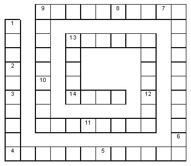

- 1 – фигура, образованная двумя лучами, выходящими из одной точки
- 2 – часть прямой
- 3 – запись из одной или нескольких цифр
- 4 – геометрическая фигура, состоящая из двух точек и точек, лежащих между ними
- 5 – четырехугольник
- 6 – геометрическая фигура
- 7 – геометрическая фигура
- 8 – единица измерения площади
- 9 – место, занимаемое цифрой в записи числа
- 10 – арифметическое действие
- 11 – наименьшее натуральное число
- 12 – раздел математики
- 13 – старинная русская мера длины
- 14 – число, на которое нельзя делить